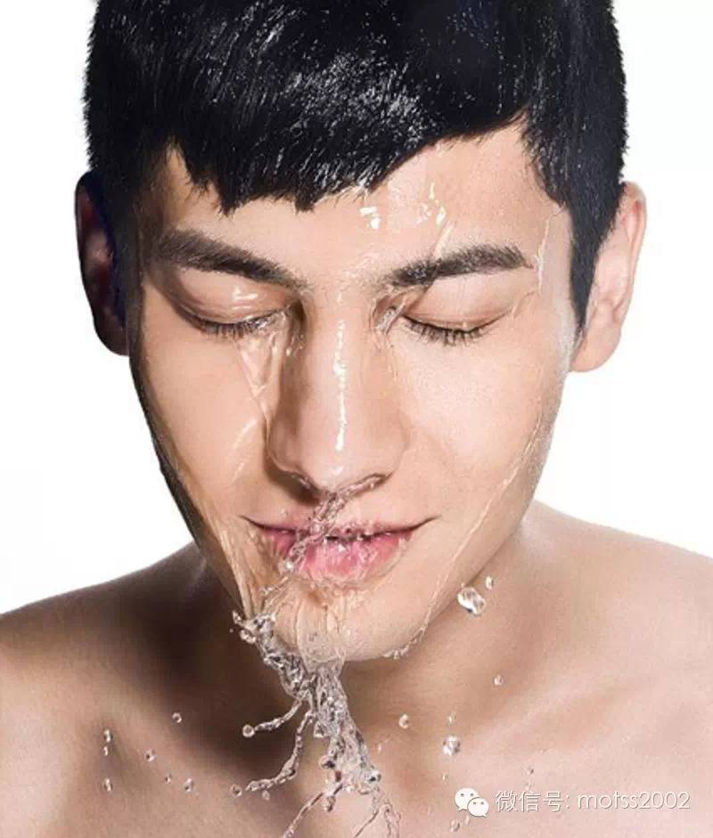

Owen旭的话：【当当当当！生活版这次请来了微博护肤圈上小有名气的猫君（论坛id：@Tcikh 新浪微博：@猫君正在努力博未来） 来为大家介绍秋冬季护肤的要点。猫君以后还会以每周一次的高频率为大家介绍更多的护肤姿势~是不是福利很大呢？在这个看脸的世界，一个好皮肤实在太重要！所以大家赶紧拿出小笔记本开始学习吧】
前言：真的非常感谢锄药大仙和Owen旭大大对我的赏识，在他们邀约之下我会发一些科普文，当然其中有很多错误或者不严谨的地方，如果有发现请通知我我会及时改正，提前致谢。其实我了解护肤到现在对于这一行有一个大概的了解仅仅花费了一年的时间。如果有兴趣想去了解科学护肤，那么首先建议各位有一个良好的学习态度，看一些有关于皮肤科、精细化工的书籍，只要有高中化学和生物的水平就可以很好理解大部分护肤的概念。
其实我超级不喜欢把肤质简单的分类为油性、干性、敏感性等，当然现在还有一个外油内干等等。但实际上呢这是一个选择题，大家可以脑补一下技能树的形式，最上面的是皮肤屏障是否完整、是否具有敏感性基因、皮肤是否易出油、是否有雀斑等等。这才是一个比较标准的皮肤图谱。具体的大家有兴趣可以去瑞可化妆品博客中做一下测试，地址为：http://www.truebuty.com/skintest/

正文开始了！
秋冬季节到来，皮肤首先面临的问题是因为夏天油脂过度分泌，而秋天毛孔收缩导致的角质层变厚，不均匀堆积。进一步可能引起皮肤的炎症。还有就是皮肤油脂氧化带来的暗沉。抗氧化是这个季节的关键。
当如果你属于皮肤出油较多的类型可以考虑在这个季节适度叠加一些温和去角质的东西，比如说泥浆面膜（我觉得油性皮肤是一年四季离不开的，在冬天一个礼拜到两个礼拜一次也是不错的），只要你皮肤没有敏感或者破损使用一些低浓度的酸（olay焕颜金露，佳雪果酸霜等等），这些都是有效的解决秋天皮肤的困扰，抗氧化产品（相宜本草黑茶男士清爽乳）是比较推荐的一款，晶体乳液体系是非常适合的。
皮肤比较干的处理策略则是类似于所谓的外油内干皮肤处理方案。插一句话，外油内干这种皮肤是因为皮肤屏障受损，皮肤主动分泌油脂保护皮肤，可以理解为墙少了一块砖拿油漆涂。使用神经酰胺、脂肪酸、胆固醇的产品都是很好的选择（cerav乳液和国货中韩束墨菊系列的水 （只有这个水！）是不错的选择），对于抗氧化来说质地选择厚重一些的霜（玉兰油大红瓶，羽西人参日霜）都是很好的选择。
请大家注意，敏感性皮肤和过敏性皮肤不是一个概念！如果你皮肤因为对某种成分过敏皮肤红肿，那么因为这次过敏你皮肤变成了过敏性皮肤，在考虑护肤之前请先修复过敏（通常情况下是自主几天以内可以恢复，推荐的单品是朵拉妈妈洋甘菊面膜）后续一段时间内可以使用外油内干皮肤那种护理方法。敏感性皮肤则是皮肤过敏源比较多，日常护理可以使用一些含有红没药醇或者是柳珊瑚提取物（这个比较少见）、维生素B5(泛醇）这样的护肤品，提高皮肤耐受能力。
PS：当你皮肤皮肤属于敏感性又出油的时候请结合两种情况来参考，朵拉妈妈与我是合作关系的品牌，锄药大仙已经使用过并且表示满意，推荐单品保证自己用过以及产品的确合适的基础请务必注意。
nova君的话：【Tcikh已经在冒刺签到啦，签到帖里还有他的美照噢~大家自己去论坛一探究竟吧~另，请大家夹道欢迎Tcikh的到来！】